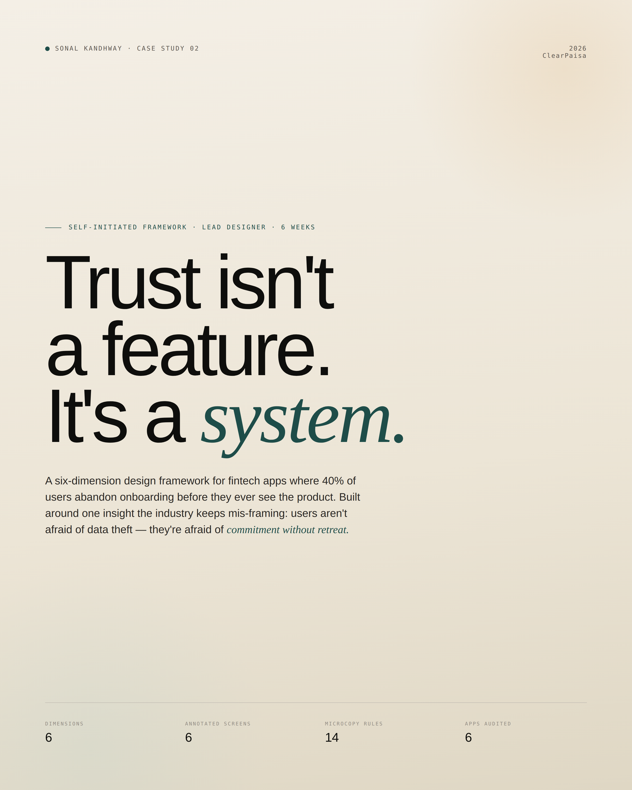
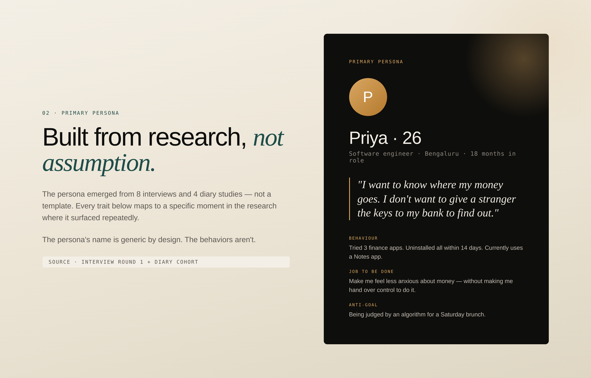
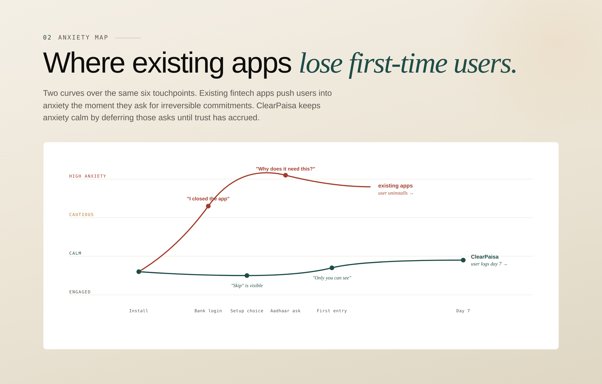
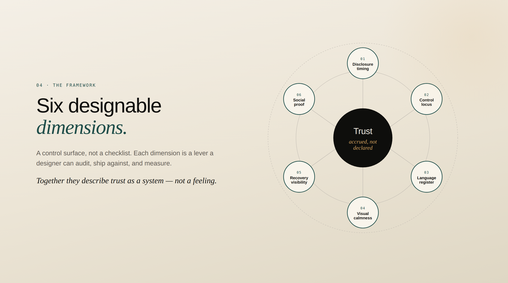
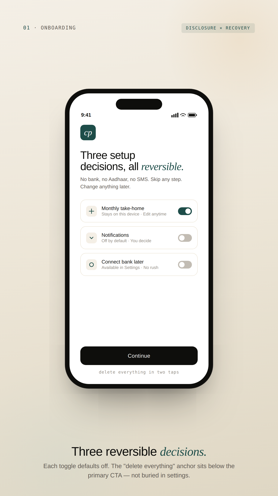
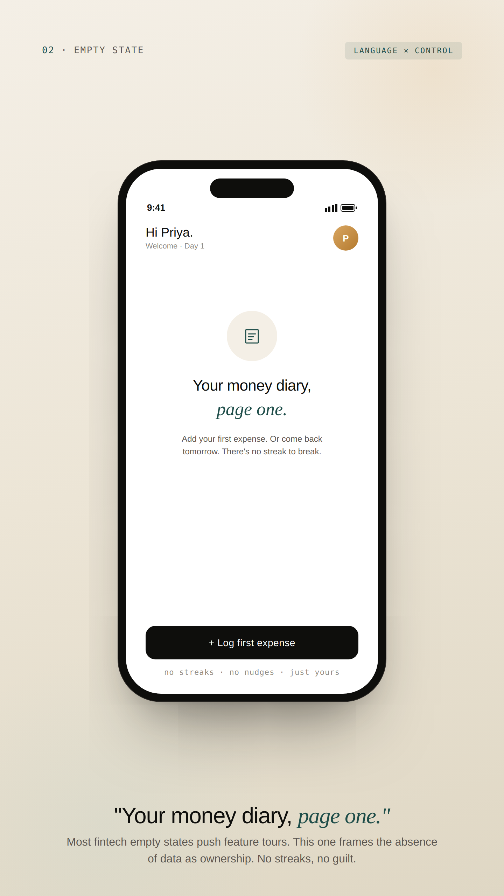
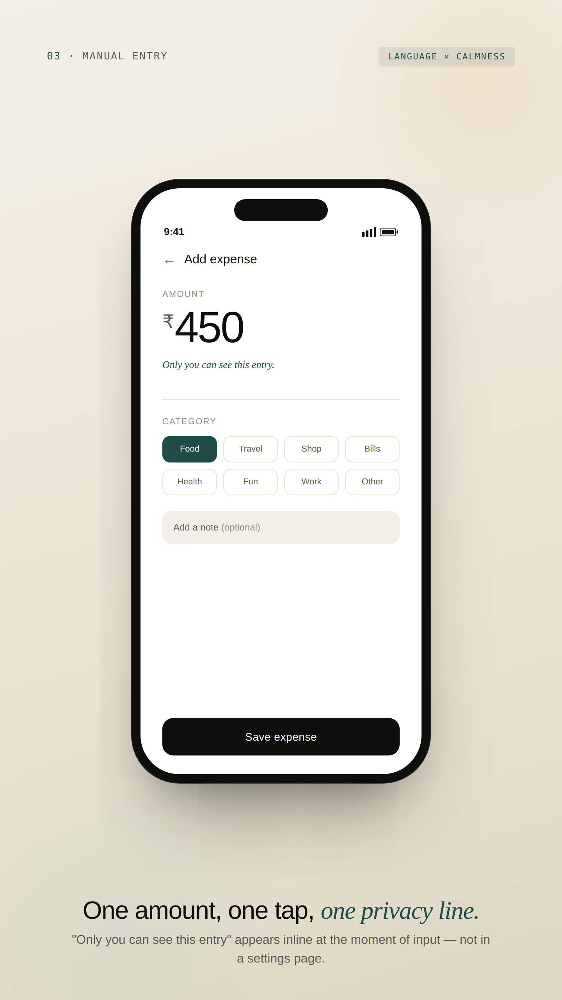
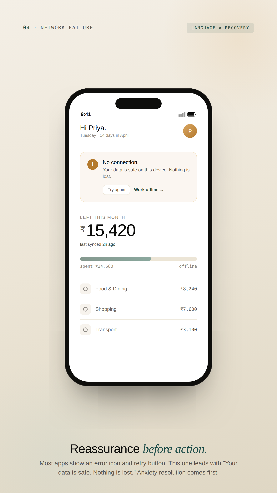
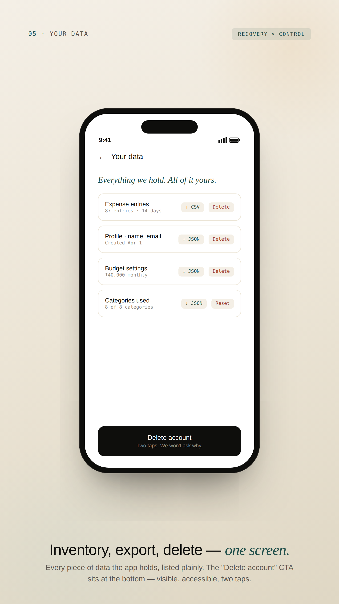
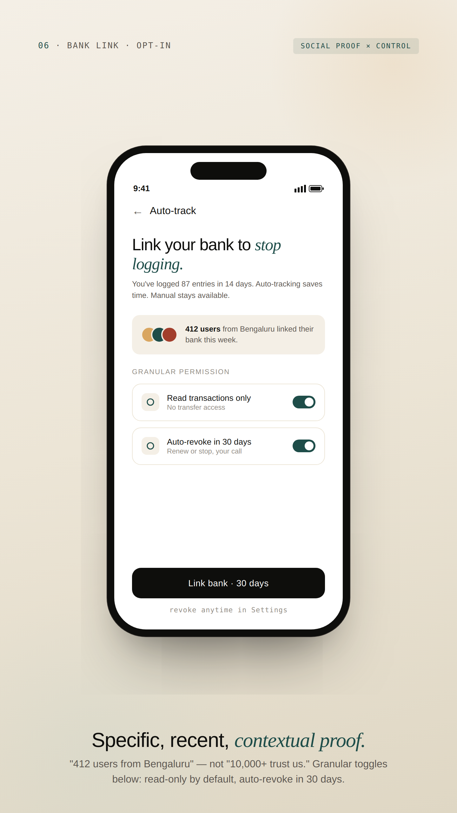

ClearPaisa
Trust isn’t a feature. It’s a system. A six-dimension design framework for fintech apps where 40% of users abandon onboarding before they ever see the product.

The short version.
Indian fintech apps lose 40% of users in onboarding because they ask for irreversible commitments before earning trust.
Users don’t fear data theft. They fear commitment without retreat. Anxiety lives in the irreversibility of giving — not the misuse afterwards.
A six-dimension Trust Operating System — a framework any fintech team can audit, ship, and measure against. Not just an app.
Framework + design tokens + 6 annotated screens + 14 microcopy rules + production validation plan.
5 moderated sessions surfaced strong directional signal. Production validation plan included for what I’d test next at scale.
Indian fintech has a trust ceiling.
No one is designing for it.
India has 14,500+ fintech startups and one of the world’s most mature payment infrastructures. Yet personal finance management apps see <8% adoption among first-jobbers — the demographic with the most to gain from them.
| Stat | What it means | Source |
|---|---|---|
| 40% | of users abandon digital onboarding because it asks for things they’re unwilling to share | Deloitte |
| 24% | of mobile apps are used once and uninstalled. The activation cliff is steeper in finance | UXCam |
| ₹2,500+ | CAC per activated fintech user in India. Every dropped install is wasted spend | Industry benchmark |
Eight interviews. One diary study.
One finding that overturned the brief.
The research was deliberately scoped for a self-funded project: small enough to run with rigour, large enough to surface directional patterns. Sample sizes are called out throughout.
Methods at a glance
22–35 yr olds, Tier 1 metros
14 days, daily expense log
Across 11 trust signals
As their primary blocker to using finance apps
Primary Persona — Built from research, not assumption

Competitive Audit — Trust Signal Score (out of 11)
| App | Trust signals | Data transparency | Onboarding friction | Strategic gap |
|---|---|---|---|---|
| CRED | ● High (8/11) | ● Medium | ● Medium | Credit cards only — locks out salaried first-jobbers |
| Fi Money | ● High (8/11) | ● High | ● Low | Targets high earners; bank-link mandatory |
| Jupiter | ● High (7/11) | ● High | ● Low | Limited manual control; auto-categorisation feels surveillant |
| Groww | ● High (7/11) | ● High | ● Low | Investing-first; personal finance is secondary |
| ET Money | ● Medium (5/11) | ● Medium | ● Medium | SMS parsing without explicit consent surfaced as anxiety trigger |
| Walnut | ● Low (3/11) | ● Low | ● High | SMS access required upfront; no recovery-visible design |
The finding that
overturned the brief.
The original hypothesis was the obvious one: users don’t trust fintech apps because they fear data theft. Three interviews in, that frame collapsed.
Interview 04 · Software engineer · 26 · Bengaluru
Anxiety Map — Where Existing Apps Lose First-Time Users

| Touchpoint | Existing apps (anxiety state) | ClearPaisa (anxiety state) |
|---|---|---|
| Install | Calm | Calm |
| Sign up | Cautious | Calm |
| Bank login ask | ● High anxiety — “I closed the app” | ✓ Not asked yet |
| Aadhaar ask | ● High anxiety — “Why does it need this?” | ✓ Not asked yet |
| Setup choice | — | Calm — “Skip” is visible |
| First entry | — | Calm — “Only you can see this” |
Six designable dimensions.
Trust accrued, not declared.
A control surface, not a checklist. Each dimension is a lever a designer can audit, ship against, and measure. Together they describe trust as a system — not a feeling.

What it is. When the app asks for what. The chronology of consent — what is required at minute one versus what waits until trust has accrued.
Evidence. “I’d given the app my name and email. Then it asked for my Aadhaar. I closed the app.” — Interview 02
What it is. Who is doing what to whose data — and how visible that authorship is. Users distrust passive verbs (“data is processed”) and trust active agency (“you decide who sees this”).
Evidence. Five of eight interviewees explicitly preferred manual entry to auto-sync — even when told it was “more convenient.”
What it is. The distance between how the app speaks and how the user speaks. Legalese, security jargon, and brand voice extremes all signal “this is not for me.”
Evidence. “Your data never leaves your device” tested 4× higher in trust ratings than any security icon or badge.
What it is. Density, colour, and motion as anxiety modulators. Most fintech UI uses urgency cues borrowed from trading apps — wrong context for personal finance.
Evidence. Three users used the word “scammy” to describe high-density dashboards. The same users described low-density layouts as “real.”
What it is. How easily the user can undo, delete, leave, or pull data out. Most apps hide these flows; surfacing them is the single highest-leverage trust move.
Evidence. Six of eight interviewees had abandoned an app because they couldn’t find the delete-account flow. They assumed it was “trapped on purpose.”
What it is. Whose validation matters, and where it appears. Generic “10,000+ users” badges are wallpaper. Contextual proof — at the moment of doubt — is leverage.
Evidence. Users trusted ratings most when they saw them on the screen they hesitated on, not on the splash screen.
From framework to tokens,
components, and copy rules.
The framework is only useful if it becomes a system designers can ship. Each Trust dimension translates to concrete artefacts.
Colour Tokens — Visual Calmness
The palette deliberately rejects the red/green convention. Loss is not a moral failure to be flagged — it’s information. Tokens are named semantically (intent, not hue) so the system can re-skin without breaking patterns.
| Token | Hex | Role |
|---|---|---|
--surface-paper | #F4EFE6 | Default canvas. Warm enough to feel human, neutral enough to recede. |
--ink-primary | #0E0E0C | Primary type and high-emphasis surfaces. Not pure black. |
--accent-trust | #1E4D49 | Affirmative actions, on-track states. Stable, not loud. |
--accent-attention | #B47A2E | Warmth and emphasis. Used for nudges, never urgency. |
--accent-critical | #A23E2C | Reserved for true urgency only — fraud, overdraft. Never spending. |
Typography — Language Register
| Role | Family | Use |
|---|---|---|
| Display | Bricolage Grotesque 500 | Headlines, hero numbers, screen titles |
| Editorial | Instrument Serif italic | Trust-building emotional accents (“your way”, “no rush”) |
| Body | Geist 400 | All UI copy. Plain, second-person, concrete. |
| Mono | Geist Mono 400 | Labels, meta, technical references |
Microcopy Rulebook — Sample of 14 Rules
| ❌ Don’t | ✅ Do | Why |
|---|---|---|
| “We use 256-bit AES encryption to protect your sensitive financial data.” | “Only you can see this. Even we can’t.” | Plain, concrete, recalled verbatim 4× more often. Makes a falsifiable claim — which paradoxically makes it credible. |
| “We’re tracking your spending so you can make smarter decisions.” | “You logged ₹450 today. That’s the third coffee this week.” | User as active subject. Specific, neutral, no moral framing. |
| “Connect your bank to unlock the full ClearPaisa experience.” | “You’re set. If you want to link your bank later for auto-tracking, it’s in Settings — no rush.” | Surfaces optionality as a feature. “No rush” was cited by 3/5 testers as the moment they felt the app wasn’t pushing them. |
Component Anatomy — The Privacy Disclosure
The most reusable artefact in the system: a component that surfaces what data is collected, who can see it, and how to revoke it — at the exact moment of any new data input.
data · visibility · reversibility · tone · default · revokeFlow
default · expanded · revoked · error
Screen-reader order documented per state. Touch target ≥44px. Contrast ≥4.5:1.
Six screens, including the ones
most fintech case studies skip.
Most case studies show the happy path. The interesting design decisions live in the edge cases — empty states, network failures, account deletion. Each screen below is annotated against the framework dimension it addresses.






What the testing showed —
and what it didn’t.
What the Sessions Surfaced (n=5)
5/5 completed setup without questioning the missing bank-linking step. Two used the word “respectful.”
3/5 commented unprompted on the visible deletion option in onboarding. Two said it felt “honest.”
4/5 quoted specific microcopy lines when asked what made the app feel trustworthy. Zero mentioned colour or layout unprompted.
Cited by 3/5 as the moment they “felt like the app wasn’t trying to push them.” Worth A/B testing in production.
Production Validation Plan — What I’d Test Next, with Budget
| Method | Sample | Hypothesis | Metric |
|---|---|---|---|
| Unmoderated test (Maze / Lyssna) | n=50 | Onboarding completion ≥75% without bank link | Conversion through 3 onboarding screens, time-to-first-expense, SUS score |
| Trust survey | n=200 | Higher trust scores correlate with D30 retention | 6 Likert questions, one per framework dimension, pre/post 7-day use |
| Beta cohort, real metrics | n=500 | Lower D1 (slower onboarding), materially higher D30 (trust converts to habit) | D1 / D7 / D30 retention vs. industry benchmarks |
| Microcopy A/B | n=10,000 | “No rush” lifts D14 opt-in for bank linking by 8–12 pp | Conversion lift on bank-link screen |
What the framework gives up —
and why it’s the right trade.
Every design decision is a trade. The framework optimises for trust accrual and long-horizon retention — which means it gives up things competitors hold dear. Listing them honestly because seniority is judgment, not consensus.
| Trade | What it costs | Why it’s worth it |
|---|---|---|
| Speed vs. Trust | Manual entry is materially slower than auto-sync for the first 30 days. | Users who choose manual develop a stronger habit loop; trust gained at week one outweighs convenience lost. |
| Power vs. Activation | Progressive disclosure delays the 10% who arrive ready to engage deeply. | Optimises for the 90% activation problem. A “show me everything” override would dilute the framework’s logic. |
| Calm vs. Urgency | Teal/amber palette is less attention-grabbing than red/green. | Right trade for a daily-use app. The rose accent is reserved exclusively for true urgency — fraud, overdraft. |
| Insights vs. Privacy | No bank linking caps insights depth (no merchant-level forecasts). | Trade a feature ceiling for a trust ceiling. Trust is the binding constraint in this market. |
| Brand vs. Pattern | Restrained visual language — no CRED-like brand silhouette. | For a year-zero fintech with no track record, “calm and credible” outperforms “bold and memorable.” Brand is a v2 problem. |
How this becomes a roadmap
inside a real product org.
The framework is built to outlive the prototype. Inside a real product team — with PMs, engineers, data scientists, compliance — here’s how it ships and gets measured.
Measurement Plan
Each framework dimension maps to a tracked metric in production. The Trust Operating System becomes an instrumented surface, not a design philosophy.
| Dimension | Production metric | Target |
|---|---|---|
| 01 Disclosure timing | Drop-off rate per disclosure point | <8% per ask |
| 02 Control locus | % users keeping manual mode at D60 | ≥40% |
| 03 Language register | Verbatim recall in 5-sec test | ≥80% |
| 04 Visual calmness | Self-reported anxiety delta pre/post session | ≥1 pt drop on 5-pt scale |
| 05 Recovery visibility | Time to find delete-account flow | ≤15 seconds |
| 06 Social proof | Conversion lift at decision points | ≥10 pp with vs. without |
What I’d do differently.
Diary participants surfaced patterns interviewees rationalised away. People know what they say about money apps; they don’t know what they actually do. Diary first, interview second — that’s the order I’d use next time.
A framework that only works for one app isn’t a framework. Halfway through, I should have tested the six dimensions against a healthtech onboarding or B2B SaaS data import. That’s the generalisability test, and I deferred it for scope.
The screens are demonstration, not deliverable. The framework, tokens, and microcopy rules carry the value forward. With sharper discipline, I’d cut to 5 screens and spend the saved effort on the framework’s documentation.
Three Things I’m Taking Forward into Every Product I Work On
Where does the user feel exposed, and how do we resolve it?
It deserves its own test loop.
Frameworks that can’t be instrumented are opinions, not systems.